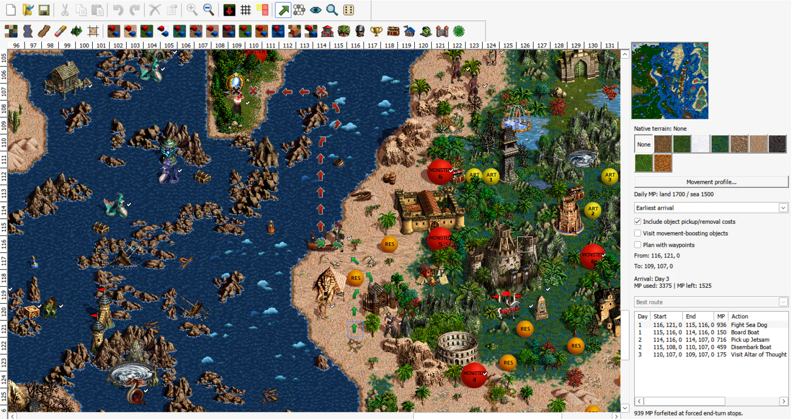
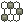

Mapmaker’s Patch
Pathfinding
Compare travel costs, arrival days and routes through waypoints.


Battlefield Explorer
Preview battlefields, search obstacle layouts and save favourites.

Advanced Find
Find rewards, creatures, spells, quests and authored text.

Multi-brush
Mirror or rotate one brush stroke to paint several parts of the map at once.
Rotate around the map center or pick any tile as your pivot. Custom rotation gives you up to 36 placements, including the original stroke. Use evenly spaced copies to draw rings, or try a few at a fixed angle to make stars and petal shapes. Advanced Settings lets you resize copies, spread them around the pivot or shift them by tiles.